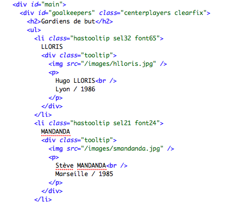
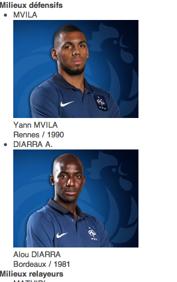
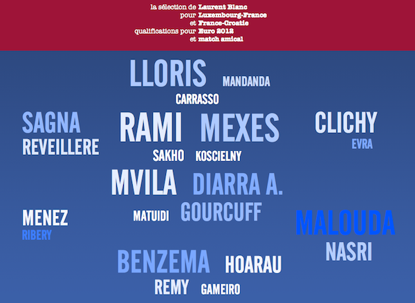
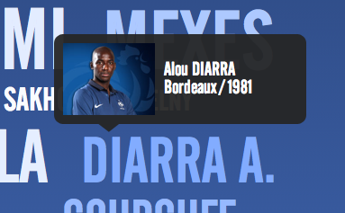

Quatrième TP d’Information Design
Les matches de l’équipe de France sont toujours l’occasion de m’entraîner à l’information design. Je pense en être arrivé à une étape décisive.
En attendant sa publication (il me reste 2, 3 trucs à régler concernant la license des polices utilisées pour les diffuser en font-face), voici quelques screenshots de l’état de la chose.
Le HTML

Le HTML est selon moi ok pour du web sémantique. Lors du dernier exercice, un commentateur Twitter m’avait répondu :
Ce n’est pas vraiment du web sémantique […] Plutôt de la visu d’informations.
Ce sur quoi je ne suis pas d’accord à 100%. Je pense que le HTML sépare clairement mise en forme et contenu, et que le contenu est structuré de façon interprétable. Par contre, il est peut-être vrai que je n’utilise pas toutes les balises les plus précises, notamment celles introduites dans HTML5, mais toute aide sur ce point sera la bienvenue.
La feuille de style
Je parlais de la séparation contenu/style. Pour illustrer ce propos, voici le HTML tel qu’il est rendu dans Chrome quand la feuille de style n’est pas activée :

Maintenant, voici la même page HTML, toujours dans Chrome, cette fois avec la feuille de style activée :

Où sont passées les photos des joueurs dans cette seconde version ? J’y viens…
Interaction via popovers
Dans mon dernier post à ce sujet, je promettais d’améliorer le design de la page en terme d’interactivité. C’est le sujet sur lequel je me suis le plus penché lors de cette session.
Le prénom d’un joueur, sa photo, son club, son âge sont des informations de seconde importance dans mon exercice. En outre, le plupart des lecteurs potentiels de cette page les connaissent de toute façon. Il n’est donc pas nécessaire de les afficher par défaut, mais il est souhaitable de pouvoir y accéder facilement malgré tout.
J’ai donc choisi de proposer ces informations lors du survol du nom d’un joueur par la souris :

Le terme consacré pour ce genre de fenêtre volante est popover ou tooltip et voici les ressources qui m’ont aidé à le réaliser :
Bilan
Le gros-oeuvre est terminé sur cet exercice. Encore quelques retouches par ci, par là (réglage des questions des droits et des licenses, tests multi-navigateurs, tests sur iPhone/iPad, etc.) et je publierai tout ça sur le web. Stay tuned et n’hésitez pas à partager vos impressions dans les commentaires !